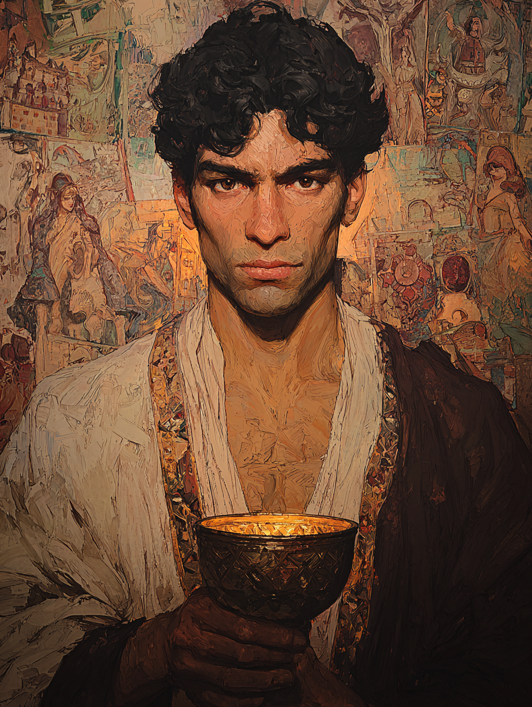

Selim the Bound
Mediator of Djinn at the Eyüp Gate · The Djinnmaster

Kurdish · Aged Twenty-Eight
On the Subject
Selim serves as a mediator between humans and djinn — though "serves" is a generous reading. His pact has left him haunted in ways he stopped admitting to himself years ago. He works a fortune-telling stall in one of the lesser bazaars near the Eyüp gate, where the desperate come and pay him in coin or favors for answers his patron whispers into his ear. Some of the answers are useful. Some are deliberately ruinous. Selim has stopped caring which.
He is twenty-eight and looks older — his hair is salted at the temples, his hands have a tremor he hides by holding cups, and his left eye has not closed fully for two years. He tells himself the djinn keeps its share of the bargain. He tells himself this so he does not have to consider what his share might have grown to be.
Faculties & Saving Throws
Base array 16, 13, 12, 11, 11, 9; Human +1 to each; Resilient (Con) +1 Con
Bearing in the Field
Skills
| Skill | Bonus | Source |
|---|---|---|
| Arcana | +3 | Djinnmaster (Voices of Al-Ghaib) |
| Deception | +5 | Charlatan |
| History | +3 | Warlock |
| Insight | +3 | Human |
| Intimidation | +5 | Warlock |
| Sleight of Hand | +3 | Charlatan |
Class Features
When rolling to gain knowledge on the realm of Al-Ghaib, he may ask his djinni for a +10 bonus to that check (used before the roll).
Pull consciousness back, let djinn take over briefly. Adds +1d6 force damage to all melee and ranged damage rolls (including ranged spell attacks like Eldritch Blast) for 1 minute. For each use during a combat (hit or miss), keep a d6; at the end of combat, roll all of them and Selim takes that amount as psychic damage to himself.
At each Warlock level he gains, he makes a Charisma save (GM-set DC). Three successive fails — the djinn possesses him fully, and he becomes a Sorcerer of Djinnpossessed origin.
1st-level: command, bane. 2nd-level: enhance ability, augury.
He gains the following as passive benefits:
- Blindsight 10 ft. — can sense creatures within 10 ft. even when blinded
- +2 passive Perception (already factored into the stat block)
As a bonus action (uses per short or long rest = proficiency bonus = 2), he may activate one of:
Each beam of Eldritch Blast deals an additional +3 force damage (Cha modifier).
Can cast nazar (the bead) 1/day without expending a spell slot.
Spells
4 spells known, plus 4 subclass always-known
- Eldritch Blast
- Mage Hand
Warlock pact magic: both slots are 2nd level; recover on short rest.
| Lvl | Spell | Notes |
|---|---|---|
| 1st | hex | Bonus action concentration; +1d6 necrotic on weapon attacks vs target, disadvantage on chosen ability check |
| 1st | charm person | Wis save DC 13; charm humanoid for 1 hour |
| 1st | hellish rebuke | Reaction; on being damaged, target takes 2d10 fire on failed Dex save |
| 2nd | suggestion | Concentration; Wis save DC 13 — his signature fortune-teller spell |
| 1st | command | Subclass always-known |
| 1st | bane | Subclass always-known; concentration |
| 2nd | enhance ability | Subclass always-known; concentration |
| 2nd | augury | Subclass always-known; ritual |
Crush a 1cp nazar bead in hand and blow dust at a creature within 30 ft. Wis save DC 13 or it makes its next ability check or attack roll at disadvantage.
Feat
Concentration saves now use +4 (Con mod 2 + PB 2). Critical for keeping hex and suggestion up under fire — and for the Losing Control campaign hook, Con-prof helps weather the strain of his pact.
Background — Charlatan (Fortune-teller)
Selim maintains a secondary persona — a wealthier, foreign-born "Master Selim of Baghdad" complete with forged certificates of arcane apprenticeship — that he wears when reading for higher-paying clientele in the better neighborhoods. The persona has documents, a backstory, and a wardrobe kept at a discreet rented room near the Galata bridge.
Cold-reads of bereaved customers desperate to contact dead relatives. Selim provides the names and details through the djinn's whispers — sometimes accurately. Sometimes the djinn provides names the customer was not expecting and could not have wanted to hear.
Equipment
- Quarterstaff — 1d6 bludgeoning; +2 to hit / 1d6+0; walking stick, lightly carved with Kurdish patterns
- Hanchar × 2 — dagger stats: 1d4 piercing, finesse, light, thrown 20/60; +3 to hit / 1d4+1
- Leather armour — a worn brown leather jacket over his fortune-teller's robes — Kurdish-cut; AC 11 + Dex
- Ceramic Cup — Common magic item (Spells & Items, City of Crescent). A Turkish coffee cup used for fortune-telling; arcane residue from divining spells has settled into the porcelain. Originally granted the ability to cast guidance once. Selim's cup has already been used — it is now a regular ceramic cup, kept as his arcane focus for symbolic value and the grooves his thumbs have worn into the rim.
- Disguise kit, forgery kit — Charlatan
- Chest of fortune-telling props — tarot cards (a French deck, second-hand), a tray of small flat stones for casting, three brass bells of different pitches, a packet of marble-mugs, a bag of nazar beads
- Leather wallet of forged credentials — "letters of arcane apprenticeship" from various Baghdadi and Damascene schools (all fake)
- Weighted dice — Charlatan; used in client games
- Common clothes + traveler's clothes — one set each
- Coded client ledger — a small book in his own shorthand: clients, debts owed, predictions made, predictions later confirmed or disconfirmed
- Fortune-telling stall in the Eyüp district — a 6-by-6-foot kiosk with a sheltered awning, a low table, and two cushions; rented by the month
- Rented room near the Galata bridge — his "Master Selim of Baghdad" persona's wardrobe
Personality
I speak softly and let the customer fill in the gaps. The djinn does most of the work; my job is to be the kind of man people want to trust.
I made a bargain. I will fulfill the bargain. What that requires of me is no longer my concern — it is the djinn's, and the djinn is patient.
There is a single client I have ruined — gave them a prediction the djinn dictated to me, and they followed it, and they are dead now. I keep their name in my ledger. I will not say why.
I do not refuse jobs. Even the ones I should. The djinn pays me in answers, and answers are the only currency I have learned to want.
Connections
- Aided Leyla of the Blue Eye in warding off a malevolent djinn in the city outskirts.
- Owes a debt to Zehra of the Spinning Veil for saving him from an attack during a ritual gone awry.
His unique connection to djinn might be helpful in understanding any supernatural occurrences.
Whether Osman Hamdi Bey fully grasps the nature of that connection — or what the djinn has made of Selim — is an open question.